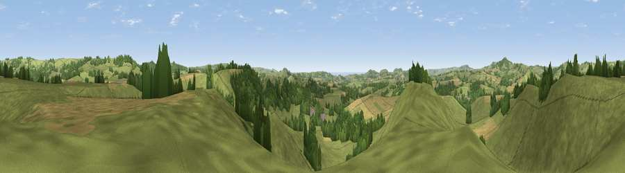

Viewpoint near Melplash
#13685 in England · top 30% of its area beats it · near MelplashThe view, rendered

A 360° render of this exact spot computed from the terrain model, tree cover and land cover — summer colours, afternoon light, calibrated against photographs of famous viewpoints. Real trees, hedges and buildings will differ in detail.
The panorama
Grey silhouette: terrain skyline in each direction (720 bearings, Earth curvature and refraction included). Dashed green: skyline with trees (+15 m) and buildings (+8 m) as obstacles. Blue strip: how far the ground is visible on each bearing.
Where the view opens
Wedge length = distance to the farthest visible ground on that bearing (vegetation-aware). Rings at 10, 25 and 50 km.
What fills the view
77% grassland · 14% woodland · 8% cropland
Angular shares of the visible panorama (visual magnitude), not map area. Landscape diversity 0.31 (0–1 Shannon).
Key numbers
More beautiful places nearby
The staircase of upgrades: each row has a higher view potential than everything closer. Driving times are estimates from straight-line distance, calibrated against real road routing — check an actual route before setting out.
| Place | Direction | Drive | Score |
|---|---|---|---|
| Jack's Hill | SE · 1 km | ~3 min | 61.9 |
| Viewpoint near North Poorton | ENE · 2 km | ~6 min | 77.0 |
| Viewpoint near Stoke Abbott | WNW · 5 km | ~11 min | 80.5 |
| Lewesdon Hill | WNW · 5 km | ~11 min | 83.3 |
| Viewpoint near North Chideock | SW · 10 km | ~20 min | 87.1 |
| Golden Cap | SW · 11 km | ~20 min | 88.7 |
| The Knoll | SSE · 12 km | ~23 min | 91.0 |
50.79121, -2.72882 · source: screening · position refined by local search. Computed location — check access rights before visiting.